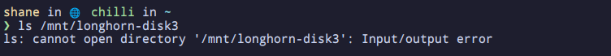
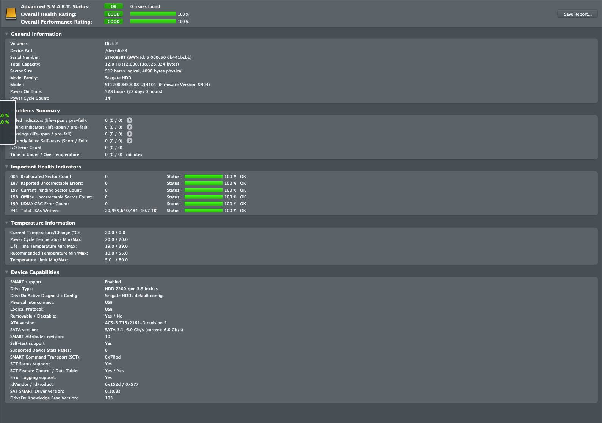
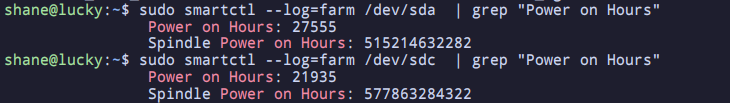

Homelab - Day ??? - Long hold-ups
Posted on Thu 24 April 2025 in homelab
So, after many days, I'm writing an update on my Homelab—or rather, updating you on the total lack of an update.
Too ghetto to handle
Unfortunately, the Ghetto NAS I was so proud of proved to be too unreliable. The disks frequently disconnected, and the k8s cluster—fairly reasonably—would break. So, it was back to the drawing board.
Distributed Jank
In the spirit of not spending any money and leaning further into the k8s ecosystem, my podcast co-host Sean suggested I look into Longhorn as a distributed block storage system. So, rather than having a central NAS, I distributed the disks across the cluster and brought them together under Longhorn.
Again, the dodgy nature of those USB drives continued to plague the setup, delivering helpful errors like:

Which required the disk to be re-mounted to fix it. Not ideal..
Time for some gentrification
Despite my best efforts, I had to invest some money into this system. And to be fair, spending money on storing critical data is probably reasonable.
Still, I couldn’t help trying to be cheap and grabbed a “steal” on eBay—two 12TB Seagate IronWolf drives for about £300, supposedly with only 600 hours of power-on time.
See photo below frmm the auction:

However, once they arrived, I did some digging. You see, with Seagate drives, there’s some vendor-specific health data beyond what you get from standard SMART logs.
You can see the output below:

While the auction claimed ~600 power-on hours, the reality was closer to 27,000—which roughly equates to 3 years of continuous use.
Next steps
Thankfully, the seller was decent. They didn’t seem hugely technical and likely had also been duped. They offered a full return.
Now I’ve bitten the bullet, spent even more money, and bought some brand new hard drives. They were supposed to arrive today, but—as is the theme of this post—my doorbell broke, and I didn’t hear the deliveryman.
So hopefully, tomorrow I can finally get started building a reliable foundation for the Homelab and resume making progress again.